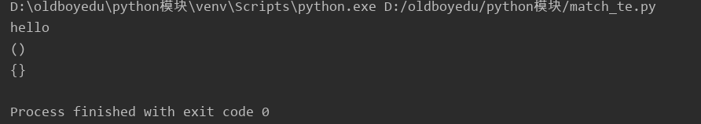
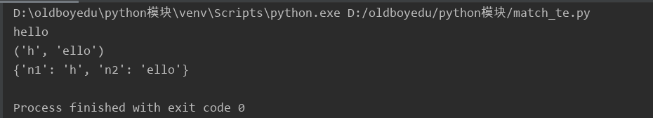
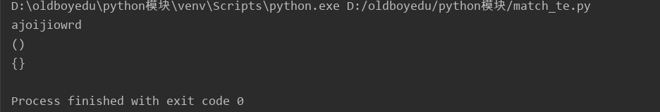
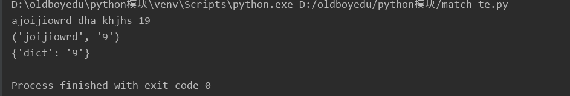

原文连接:https://www.cnblogs.com/june-L/p/11616864.html
正则表达式是一个特殊的字符序列，它能帮助你方便的检查一个字符串是否与某种模式匹配。
一、元字符
1) . --匹配任意字符（不包括换行符）
2) ^ --匹配开始位置，多行模式下匹配每一行的开始
3) $ --匹配结束位置，多行模式下匹配每一行的结束
4) * --匹配前一个元字符0到多次
5) + --匹配前一个元字符1到多次
6) ? --匹配前一个元字符0到1次
7) {m,n} --匹配前一个元字符m到n次
8) \\ --转义字符，跟在其后的字符将失去作为特殊元字符的含义，例如\\.只能匹配.，不能再匹配任意字符
9) [] --字符集，一个字符的集合，可匹配其中任意一个字符
10) | --逻辑表达式 或 ，比如 a|b 代表可匹配 a 或者 b
11) (...) -- 分组，默认为捕获，即被分组的内容可以被单独取出，默认每个分组有个索引，从 1 开始，按照"("的顺序决定索引值
12) (?iLmsux) -- 分组中可以设置模式，iLmsux之中的每个字符代表一个模式,用法参见 模式 I
13) (?:...) -- 分组的不捕获模式，计算索引时会跳过这个分组
14) (?P<name>...) -- 分组的命名模式，取此分组中的内容时可以使用索引也可以使用name
15) (?P=name) -- 分组的引用模式，可在同一个正则表达式用引用前面命名过的正则
16) (?#...) -- 注释，不影响正则表达式其它部分,用法参见 模式 I
17) (?=...) -- 顺序肯定环视，表示所在位置右侧能够匹配括号内正则
18 (?!...) -- 顺序否定环视，表示所在位置右侧不能匹配括号内正则
19) (?<=...) -- 逆序肯定环视，表示所在位置左侧能够匹配括号内正则
20) (?<!...) --逆序否定环视，表示所在位置左侧不能匹配括号内正则
21) (?(id/name)yes|no) -- 若前面指定id或name的分区匹配成功则执行yes处的正则，否则执行no处的正则
22) \number -- 匹配和前面索引为number的分组捕获到的内容一样的字符串
23) \A -- 匹配字符串开始位置，忽略多行模式
24) \Z -- 匹配字符串结束位置，忽略多行模式
25) \b -- 匹配位于单词开始或结束位置的空字符串
26) \B -- 匹配不位于单词开始或结束位置的空字符串
27) \d -- 匹配一个数字， 相当于 [0-9]
28) \D -- 匹配非数字,相当于 [^0-9]
29) \s -- 匹配任意空白字符， 相当于 [ \t\n\r\f\v]
30) \S -- 匹配非空白字符，相当于 [^ \t\n\r\f\v]
31) \w -- 匹配数字、字母、下划线中任意一个字符， 相当于 [a-zA-Z0-9_]
32) \W -- 匹配非数字、字母、下划线中的任意字符，相当于 [^a-zA-Z0-9_]
二、函数 （参见 python 模块 re 文档）
2.1 compile(pattern, flags=0)
给定一个正则表达式 pattern，指定使用的模式 flags 默认为0 即不使用任何模式,然后会返回一个 SRE_Pattern
示例：
regex = re.compile(".+")
print regex
# >>> <_sre.SRE_Pattern object at 0x00000000026BB0B8>
这个对象可以调用其他函数来完成匹配，一般来说推荐使用 compile 函数预编译出一个正则模式之后再去使用，这样在后面的代码中可以很方便的复用它，当然大部分函数也可以不用 compile 直接使用，具体见 findall 函数
示例：
s = '''first line
second line
third line'''
# 调用 findall 函数
print regex.findall(s)
#>>> ['first line', 'second line', 'third line']
# 调用 search 函数
print regex.search(s).group()
# >>> first lin
2.2 escape(pattern)
转义 如果你需要操作的文本中含有正则的元字符，你在写正则的时候需要将元字符加上反斜扛 \ 去匹配自身， 而当这样的字符很多时，写出来的正则表达式就看起来很乱而且写起来也挺麻烦的，这个时候你可以使用这个函数,用法如下
示例：
s = ".+\d123"
regex_str = re.escape(".+\d123")
# 查看转义后的字符
print regex_str
# >>> \.\+\\d123
# 查看匹配到的结果
for g in re.findall(regex_str, s):
print g
# >>> .+\d123
2.3 findall(pattern, string, flags=0)
参数 pattern 为正则表达式, string 为待操作字符串, flags 为所用模式，函数作用为在待操作字符串中寻找所有匹配正则表达式的字串，返回一个列表，如果没有匹配到任何子串，返回一个空列表。
示例：
s = '''first line
second line
third line'''
# compile 预编译后使用 findall
regex = re.compile("\w+")
print regex.findall(s)
# >>> ['first', 'line', 'second', 'line', 'third', 'line']
# 不使用 compile 直接使用 findall
print re.findall("\w+", s)
# >>> ['first', 'line', 'second', 'line', 'third', 'line']
2.4 finditer(pattern, string, flags=0)
参数和作用与 findall 一样，不同之处在于 findall 返回一个列表， finditer 返回一个迭代器， 而且迭代器每次返回的值并不是字符串，而是一个 SRE_Match (参见 第四小节 re 内置对象用法) 对象，这个对象的具体用法见 match 函数。
示例：
s = '''first line
second line
third line'''
regex = re.compile("\w+")
print regex.finditer(s)
# >>> <callable-iterator object at 0x0000000001DF3B38>
for i in regex.finditer(s):
print i
# >>> <_sre.SRE_Match object at 0x0000000002B7A920>
# <_sre.SRE_Match object at 0x0000000002B7A8B8>
# <_sre.SRE_Match object at 0x0000000002B7A920>
# <_sre.SRE_Match object at 0x0000000002B7A8B8>
# <_sre.SRE_Match object at 0x0000000002B7A920>
# <_sre.SRE_Match object at 0x0000000002B7A8B8>
2.5 match(pattern, string, flags=0)
###从头匹配
使用指定正则去待操作字符串中寻找可以匹配的子串, 返回匹配上的第一个字串，并且不再继续找，需要注意的是 match 函数是从字符串开始处开始查找的，如果开始处不匹配，则不再继续寻找，返回值为 一个 SRE_Match 对象，找不到时返回 None
示例：
s = '''first line
second line
third line'''
# compile
regex = re.compile("\w+")
m = regex.match(s)
print m
# >>> <_sre.SRE_Match object at 0x0000000002BCA8B8>
print m.group()
# >>> first
# s 的开头是 "f", 但正则中限制了开始为 i 所以找不到
regex = re.compile("^i\w+")
print regex.match(s)
# >>> None
正则表达式之match以及分组
无分组示例：
#为何要有分组？
提取匹配成功的指定内容（先匹配成功全部正则，再匹配成功的局部内容提取出来）


1 import re
2
3 origin = "hello hhajoijiowrd dha khjhs 19ah"
4 r = re.match("h\w+", origin)
5 print(r.group()) #获取匹配到的所有结果
6 print(r.groups()) #获取模型中匹配到的分组结果
7 print(r.groupdict()) #获取模型中匹配到的分组中所有执行了key的组结果图示：

有分组示例：
1 import re
2
3 origin = "hello hhajoijiowrd dha khjhs 19ah"
4 r = re.match("h(\w+)", origin)
5 r = re.match("(?P<n1>h)(?P<n2>\w+)", origin) #通过?P<name>将模型中匹配到的分组回到groupdict()字典中
6 print(r.group()) #获取匹配到的所有结果
7 print(r.groups()) #获取模型中匹配到的分组结果
8 print(r.groupdict()) #获取模型中匹配到的分组中所有执行了key的组结果图示：

2.6 purge()
当你在程序中使用 re 模块，无论是先使用 compile 还是直接使用比如 findall 来使用正则表达式操作文本，re 模块都会将正则表达式先编译一下， 并且会将编译过后的正则表达式放到缓存中，这样下次使用同样的正则表达式的时候就不需要再次编译， 因为编译其实是很费时的，这样可以提升效率，而默认缓存的正则表达式的个数是 100, 当你需要频繁使用少量正则表达式的时候，缓存可以提升效率，而使用的正则表达式过多时，缓存带来的优势就不明显了， 这个函数的作用是清除缓存中的正则表达式，可能在你需要优化占用内存的时候会用到。
2.7 search(pattern, string, flags=0)
###浏览全部字符串，匹配第一个符合规则的字符串。
函数类似于 match，不同之处在于不限制正则表达式的开始匹配位置
示例：
s = '''first line
second line
third line'''
# 需要从开始处匹配 所以匹配不到
print re.match('i\w+', s)
# >>> None
# 没有限制起始匹配位置
print re.search('i\w+', s)
# >>> <_sre.SRE_Match object at 0x0000000002C6A920>
print re.search('i\w+', s).group()
# >>> irst
正则表达式之search以及分组
无分组示例：
1 import re
2
3 origin = "hello hhajoijiowrd dha khjhs 19"
4 r = re.search("a\w+", origin)
5 print(r.group()) #获取匹配到的所有结果
6 print(r.groups()) #获取模型中匹配到的分组结果
7 print(r.groupdict()) #获取模型中匹配到的分组中所有执行了key的组结果图示：

有分组示例：
1 import re
2
3 origin = "hello hhajoijiowrd dha khjhs 19"
4 r = re.search("a(\w+).*(?P<dict>\d)$", origin) #通过?P<name>将模型中匹配到的分组回到groupdict()字典中
5 print(r.group()) #获取匹配到的所有结果
6 print(r.groups()) #获取模型中匹配到的分组结果
7 print(r.groupdict()) #获取模型中匹配到的分组中所有执行了key的组 结果图示：

2.8 split(pattern, string, maxsplit=0, flags=0)
参数 maxsplit 指定切分次数， 函数使用给定正则表达式寻找切分字符串位置，返回包含切分后子串的列表，如果匹配不到，则返回包含原字符串的一个列表
示例：
s = '''first 111 line
second 222 line
third 333 line'''
# 按照数字切分
print re.split('\d+', s)
# >>> ['first ', ' line\nsecond ', ' line\nthird ', ' line']
# \.+ 匹配不到 返回包含自身的列表
print re.split('\.+', s, 1)
# >>> ['first 111 line\nsecond 222 line\nthird 333 line']
# maxsplit 参数
print re.split('\d+', s, 1)
# >>> ['first ', ' line\nsecond 222 line\nthird 333 line']
2.9 sub(pattern, repl, string, count=0, flags=0)
替换函数，将正则表达式 pattern 匹配到的字符串替换为 repl 指定的字符串, 参数 count 用于指定最大替换次数
示例：
s = "the sum of 7 and 9 is [7+9]."
# 基本用法 将目标替换为固定字符串
print re.sub('\[7\+9\]', '16', s)
# >>> the sum of 7 and 9 is 16.
# 高级用法 1 使用前面匹配的到的内容 \1 代表 pattern 中捕获到的第一个分组的内容
print re.sub('\[(7)\+(9)\]', r'\2\1', s)
# >>> the sum of 7 and 9 is 97.
# 高级用法 2 使用函数型 repl 参数, 处理匹配到的 SRE_Match 对象
def replacement(m):
p_str = m.group()
if p_str == '7':
return '77'
if p_str == '9':
return '99'
return ' '
print re.sub('\d', replacement, s)
# >>> the sum of 77 and 99 is [77+99].
# 高级用法 3 使用函数型 repl 参数, 处理匹配到的 SRE_Match 对象 增加作用域 自动计算
scope = {}
example_string_1 = "the sum of 7 and 9 is [7+9]."
example_string_2 = "[name = 'Mr.Gumby']Hello,[name]"
def replacement(m):
code = m.group(1)
st = ''
try:
st = str(eval(code, scope))
except SyntaxError:
exec code in scope
return st
# 解析: code='7+9'
# str(eval(code, scope))='16'
print re.sub('\[(.+?)\]', replacement, example_string_1)
# >>> the sum of 7 and 9 is 16.
# 两次替换
# 解析1: code="name = 'Mr.Gumby'"
# eval(code)
# raise SyntaxError
# exec code in scope
# 在命名空间 scope 中将 "Mr.Gumby" 赋给了变量 name
# 解析2: code="name"
# eval(name) 返回变量 name 的值 Mr.Gumby
print re.sub('\[(.+?)\]', replacement, example_string_2)
# >>> Hello,Mr.Gumby
2.10 subn(pattern, repl, string, count=0, flags=0)
作用与函数 sub 一样， 唯一不同之处在于返回值为一个元组，第一个值为替换后的字符串，第二个值为发生替换的次数
2.11 template(pattern, flags=0)